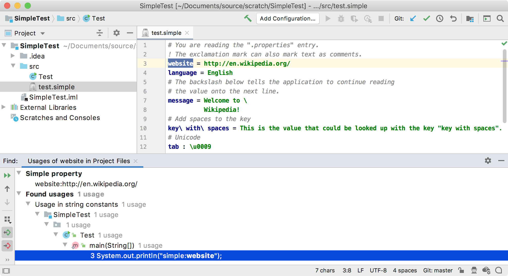

11. Find Usages Provider
A find usage provider uses a word scanner to build an index of words in every file. A scanner breaks the text into words and defines the context for each word.
11.1. Define a Find Usages Provider
The SimpleFindUsagesProvider implements FindUsagesProvider.
Using the DefaultWordsScanner ensures the scanner implementation is thread-safe.
See the comments in FindUsagesProvider for more information.
// Copyright 2000-2020 JetBrains s.r.o. and other contributors. Use of this source code is governed by the Apache 2.0 license that can be found in the LICENSE file.
package org.intellij.sdk.language;
import com.intellij.lang.cacheBuilder.*;
import com.intellij.lang.findUsages.FindUsagesProvider;
import com.intellij.psi.*;
import com.intellij.psi.tree.TokenSet;
import org.intellij.sdk.language.psi.SimpleProperty;
import org.intellij.sdk.language.psi.SimpleTypes;
import org.jetbrains.annotations.*;
public class SimpleFindUsagesProvider implements FindUsagesProvider {
@Nullable
@Override
public WordsScanner getWordsScanner() {
return new DefaultWordsScanner(new SimpleLexerAdapter(),
TokenSet.create(SimpleTypes.KEY),
TokenSet.create(SimpleTypes.COMMENT),
TokenSet.EMPTY);
}
@Override
public boolean canFindUsagesFor(@NotNull PsiElement psiElement) {
return psiElement instanceof PsiNamedElement;
}
@Nullable
@Override
public String getHelpId(@NotNull PsiElement psiElement) {
return null;
}
@NotNull
@Override
public String getType(@NotNull PsiElement element) {
if (element instanceof SimpleProperty) {
return "simple property";
} else {
return "";
}
}
@NotNull
@Override
public String getDescriptiveName(@NotNull PsiElement element) {
if (element instanceof SimpleProperty) {
return ((SimpleProperty) element).getKey();
} else {
return "";
}
}
@NotNull
@Override
public String getNodeText(@NotNull PsiElement element, boolean useFullName) {
if (element instanceof SimpleProperty) {
return ((SimpleProperty) element).getKey() + SimpleAnnotator.SIMPLE_SEPARATOR_STR + ((SimpleProperty) element).getValue();
} else {
return "";
}
}
}
11.2. Register the Find Usages Provider
The SimpleFindUsagesProvider implementation is registered with the IntelliJ Platform in the plugin configuration file using the com.intellij.lang.findUsagesProvider extension point.
<extensions defaultExtensionNs="com.intellij">
<lang.findUsagesProvider language="Simple"
implementationClass="org.intellij.sdk.language.SimpleFindUsagesProvider"/>
</extensions>
11.3. Run the Project
Rebuild the project, and run simple_language_plugin in a Development Instance.
The IDE now supports Find Usages for any property with a reference:

Last modified: 19 February 2020